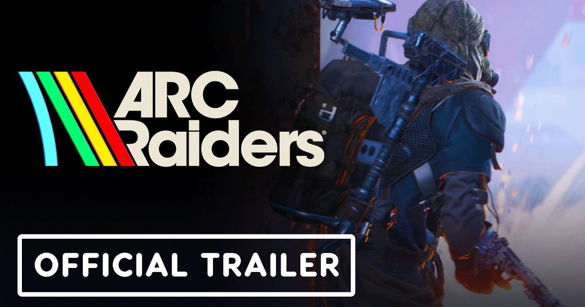

ARC Raiders' Flickering Flames event is live — Celeste's dinner, three stages, and the Nessuno Set
Store Update 2.7.0 is live in ARC Raiders, and Part 1 of the Flickering Flames project is underway — Celeste is gathering all four contradas in Speranza for a celebration of light, and Raiders have three stages to complete to get her dinner ready.

Disclosure: this post contains affiliate links. I earn a commission on qualifying purchases.
Flickering Flames is live. Embark Studios rolled out Store Update 2.7.0 for ARC Raiders on November 24, 2026, and Part 1 of the two-part Flickering Flames Raider project is underway in Speranza — no restart required, the update is already live in-game.
The premise is the warmest the game has ever been. For the first time, Celeste is bringing members of all four contradas together for a celebration of light, and she is preparing a special dinner to mark it. Raiders help her get it ready across three stages, and each stage pays out weapons and weapon mods. The project runs through December 28, and Part 2 unlocks on December 8.
The three stages
Stage 1 — Banquet Basics. Hand over 10 Durable Cloth, 10 Batteries, 5 Pop Triggers, and 5 Candleberries. Completing it awards a Grappling Hook, a Harmonica, an Il Toro IV shotgun, and a Shotgun Choke II.
Stage 2 — Lights and Tableware. The shopping list gets rarer: 5 Advanced Electrical Components, 2 Silver Teaspoon Sets, Firefly Burners, and 10 Candleberries. The payout is an Anvil IV, an Extended Barrel II, a Tether Launcher, and a Mountaineer's Detector.
Stage 3 — Clear The Way. No scavenging for the final step — instead, pick one of two objectives. Heal three Raiders outside your own squad, or deal 800 damage to fire-wielding ARC — the Vaporizer, Firefly, and Fireball machines. Finishing it, and with it Part 1 of the project, awards a Canto IV, a Compensator III, an Angled Grip III, and a Padded Stock.
Candleberries are the thread running through the whole project, and they grow on bushes during the Cold Snap map condition — which is back in rotation for the event, covering the Rust Belt in snow. If you are short on berries, a Cold Snap run is where to look.
The Nessuno Set hits the store
The Nessuno Set arrives in the in-game store rotation with the update: an outfit, a backpack, and a backpack charm. It is the store side of 2.7.0 — the project itself is the free, playable half, and the cosmetics are the part you buy.
A holiday event, not a patch
There is no balance pass or bug-fix list attached to 2.7.0. It is a store update and a seasonal event, a week after Live Update 2.6.0 did the heavier lifting — bringing Cold Snap back, expanding buried-item hunting to nearly every map, adding the Outlaw Weapon Stencil Set, and putting the game at 50% off for Black Friday. That sale is still running on most platforms through the end of the month and into early December.
The timing is the point. A year after launch, ARC Raiders is running a holiday event built around a dinner, not a boss fight — a communal moment in the settlement while the surface stays hostile. Part 2 arrives in two weeks, and the cosmetic half of the event lands with it.
Sources: ARC Raiders - Store Update 2.7.0 - Flickering Flames (Steam, official) · Arc Raiders 2.7.0 Update Adds New Flickering Flames Project and Cosmetics (TalkEsport) · ARC Raiders Flickering Flames Project guide (Dot Esports)
Watch
Source: ARC Raiders - Official New Event: Flickering Flames Trailer (ARC Raiders) — the official trailer for the Flickering Flames event, showing Celeste's celebration of light in Speranza.
Rep the title

ARC Raiders T-Shirt - Black — $30
Gear up: Razer — mice, keyboards, headsets and laptops.